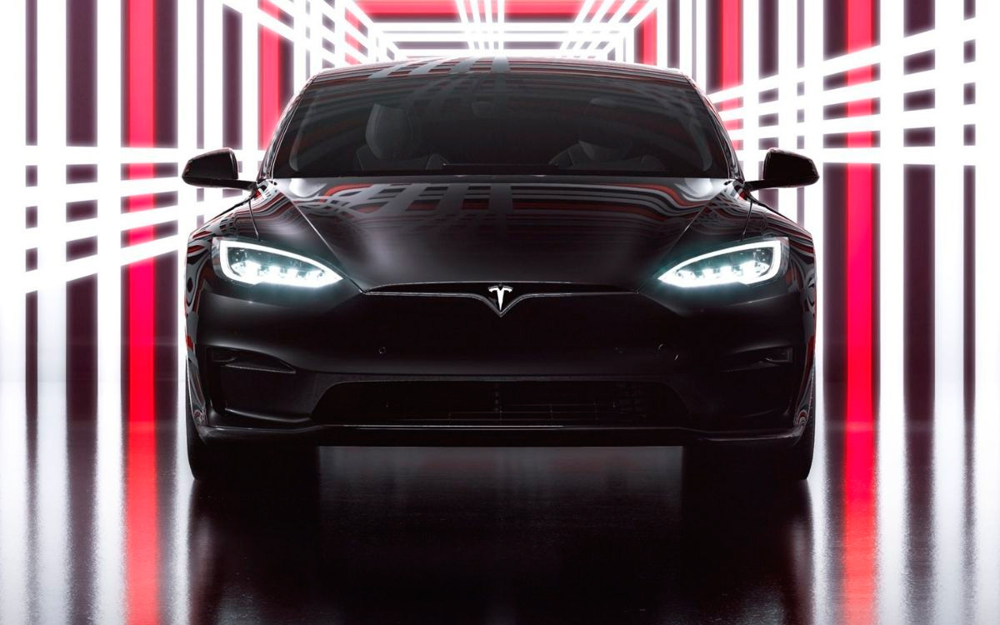

О компании Tesla
{kind=link}
Tesla (ранее Tesla Motors) — американская компания, производитель электромобилей и (через свой филиал SolarCity) решений для хранения электрической энергии, базирующаяся в Пало-Альто, Калифорния. Названа в честь всемирно известного электротехника и физика Николы Теслы.
Продукты Tesla включают электромобили, аккумуляторы для хранения энергии от дома до электросети, солнечные панели и солнечную черепицу, а также другие сопутствующие товары и услуги.
В 2019 году Tesla стала самым продаваемым в мире производителем легковых электромобилей с подключаемыми модулями и аккумуляторами с долей рынка в 17% сегмента подключаемых модулей и 23% сегмента электрических аккумуляторов.
За 2020 год рыночная стоимость компании выросла в восемь раз. 6 января 2021 года Tesla оценивали в $800 млрд, рыночная капитализация Tesla превосходит 9 крупнейших автопроизводителей вместе взятых.
В 2020 году cуммарная чистая прибыль компании составила $721 млн по сравнению с чистым убытком в $862 млн в 2019 году.
Компания Tesla (основанная как Tesla Motors) была зарегистрирована 1 июля 2003 года Мартином Эберхардом и Марком Тарпеннингом. Ян Райт был третьим сотрудником Tesla, присоединившимся к ней несколько месяцев спустя. В феврале 2004 года трое основателей привлекли инвестиции в размере $7,5 млн, при этом Илон Маск внес $6,5 млн. Маск стал председателем совета директоров и назначил Эберхарда генеральным директором.
Целью Tesla было начать со спортивного автомобиля премиум-класса, ориентированного на первых пользователей, а затем перейти к более массовым автомобилям, включая седаны и доступные компактные автомобили. Прототипы первого автомобиля Tesla были официально представлены публике 19 июля 2006 года в Санта-Монике (Калифорния).
В 2006 году Маску удалось, проведя несколько раундов финансирования от инвестиционных фондов и известных предпринимателей (включая соучредителей Google), привлечь $100 млн. В результате Tesla начала производство своей первой модели Roadster в 2008 году.
Tesla Roadster, первый автомобиль компании — это первый серийный автомобиль, использующий литий-ионные аккумуляторные батареи и первый серийный электромобиль с запасом хода более 200 миль (320 км) на одной зарядке. Спортивная модель разгоняется от 0 до 60 миль/ч (97 км/ч) за 3,7 секунды и, согласно экологического анализа Tesla Motors, вдвое энергоэффективным за Toyota Prius. Начиная с 2008 года до марта 2012 Tesla Motors было продано более 2250 родстеров в 31 стране.
26 марта 2009 года Tesla Motors представила полностью электрический седан.
В январе 2010 года Tesla получила от Министерства энергетики США заём в размере $465 миллионов, который компания погасила в 2013 году. В мае 2010 года Tesla начала строительство фабрики во Фримонте (Калифорния) для производства Model S.
29 июня 2010 года Tesla начала первичное публичное размещение акций (IPO) на NASDAQ, став первой американской автомобильной компанией, осуществившей IPO, после Ford Motor в 1956 году. Это дало компании доступ к крупнейшему источнику финансирования.
В июне 2012 года Tesla начала производство своего второго автомобиля — Model S. В июле 2017 года Tesla начала продавать седан Model 3.
В мае 2017 года Илон Маск представил план развития компании, предусматривающий добавление в линейку электромобилей и грузовика.
В 2019 году Tesla выкупила производителя батарей Maxwell, сумма сделки составила примерно $218 млн.
14 марта 2019 года была презентована новая Tesla Model Y. Серийный выпуск предполагается в 2021 году.
В ноябре 2020 года Tesla, Uber и ещё 26 американских компаний учредили организацию Zero Emission Transport Association (ZETA), которая будет лоббировать увеличение количества электромобилей в США. Ассоциация будет выступать за изменения в национальной политике, которые подтолкнут отрасль к полному переходу на электромобили в секторах транспорта лёгкой, средней и большой грузоподъёмности к 2030 году.
Вверх